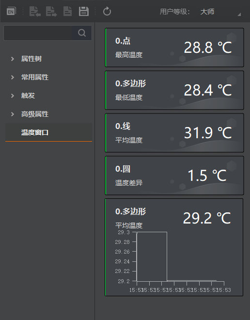

温度窗口可查看测温区域的温度数值以及温度曲线。
在测温配置中设置温度窗口信息，可选择将已绘制的测温区域的温度数值以及温度曲线信息显示在温度窗口栏中，如下图所示。
最多显示4个数值信息和1个曲线信息。

温度数值显示对应测温区域的名称和实时温度信息。
温度曲线显示对应测温区域的名称和最近12个小时的温度曲线信息。
如何进行测温区域绘制具体请见绘制测温区域章节，如何配置温度窗口信息具体请见相关参数设置章节。